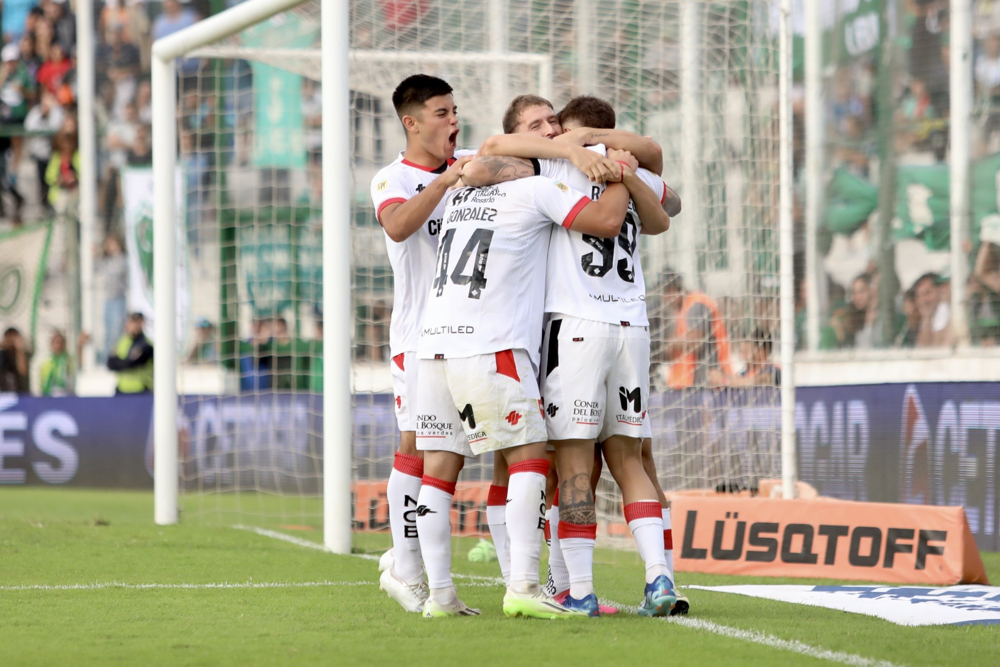

Multimedia

Gol de Newell's relato Emmanuel Greco
Gol de Newell's relato Emmanuel Greco
Rosario Noticias es un medio de comunicación con sede en la ciudad de Rosario. Desde el 6 de abril de 2024 nuestra misión es brindar al público informacion sobre la actualidad en la región.